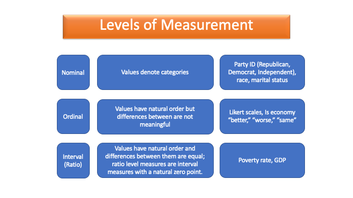

Learning Objectives
In this lesson, you will learn:
- The definition of a variable
- How to define the levels of measurement
- How to recognize the level of measurement of a variable
Variables
The purpose of data analysis is to find meaning in data and use it to solve problems. In this class, we take data as given. Although there is an unbelievable amount of data at our disposal, how we make use of data depends on how well it measures the concepts we care about. Much effort in the research enterprise is devoted to creating measures of concepts and to gathering data to operationalize those measures. The results of those efforts are the data sets we will analyze in class. The variables in these and other data sets are the building blocks for all analyses.
What is a variable? A variable is an empirical measure of the characteristics central to a concept. A variable has a name and must take multiple values (otherwise, it is a constant!). The values are typically numeric, even if those numbers stand-in for a label. Variables may be classified by their level of measurement.
Levels of Measurement
Over the course of this semester, we will be describing individual variables and analyzing (describing and testing hypotheses about) the relationship between variables. How we do so will depend on the level of measurement each variable takes. Every method we use and every hypothesis test we conduct will be determined by the level of measurement that characterizes the data. So, what do we mean by level of measurement? The level of measurement refers to how and how precisely a variable is measured. Generally, we distinguish between four different levels.
Nominal Variables
Nominal variables take qualitative values that denote categories. A nominal variable’s values are labels or names that categorize observations with respect to the attribute being measured. There is no intrinsic order to the categories.
A variable that measures individual partisan status as “Democrat,” “Independent,” “Republican,” or “Other/None” is an example of a nominal variable. Note that you can code nominal variables with numbers, but the numbers themselves are meaningless, and the order they are assigned is arbitrary: If we labeled the values of partisan status 1, 2, 3, and 4, respectively, it would not imply “Democrat” is less than “Independent” or “Republican” is less than “other/none.”
Two-category nominal variables, such as whether a respondent in a survey voted for president in the most recent election (coded “yes” or “no”), are often referred to as binary or dichotomous variables.
Try it: Identify the nominal-level variables
R has a special class of variable called a factor that may be used for nominal variables, but not all nominal variables will automatically be assigned this class. When a nominal variable is a factor variable, R will know that the variable is nominal. This can come in handy when analyzing the data. (We will discuss factors more in a later tutorial.)
Ordinal Variables
Ordinal variables take values with a natural order or rank, but the differences between those ranks are not equal.
An example of an ordinal variable is a variable that measures whether someone views the national economy today compared to a year ago as “better,” “about the same,” or “worse.” We can be confident that “worse” is not as good as “about the same,” which is not as good as “better,” but we don’t know that “better” is twice as good as “same” and three times better than “worse.”
As another example, consider income categories on a survey where the variable takes a value of 1 for incomes less than $20,000, 2 for incomes $20,000 to $49,999, 3 for incomes $50,000 to $99,999, 4 for incomes $100,000 to $199,999, 5 for incomes $200,000-$499,999, and 6 for incomes $500,000 or more. Higher numbers mean more income, but the interval between a respondent in category 1 and 2 is not the same as between category 4 and 5. This is the key feature of ordinal measures: the interval between values is not meaningful. Put differently, there is not an equal distance between values.
Most of the time, an ordinal variable will be coded with numeric rather than character values. R does have an ordered factor class, but we will not use it in this class.
Try it: Identify the ordinal-level variables
Note that both nominal and ordinal level variables are considered categorical variables because their values fall into categories.
Interval Variables
An interval variable takes values that have a natural order and the differences between values are equal. Examples include anything measured in dollars, like GDP; percentages, like unemployment; or anything that you can count, like the number of terrorist acts.
A special type of interval variable, often given its own level of measurement, is a ratio variable. A ratio variable is a type of interval variable that has a natural zero point. Almost all the interval variables we work with in the social sciences are also ratio variables. For simplicity, we will simply refer to these variables as interval-level.
Interval variables may be discrete or continuous. A variable
measured in whole numbers is discrete. One measured in decimals is
continuous. R refers to the variable type as int (for
integer) if a variable is discrete and num (for numeric) if
it is continuous.
Try it: Identify the interval-level variables
Additional considerations
There are two important considerations than can lead to confusion in determining the level of measurement of a variable. The first of these is that the same concept can often be measured at multiple levels of measurement. The second is that in some cases ordinal variables are treated as interval-level variables.
Concept versus variable
A concept is an idea such as “support for the president” or “income inequality.” When a concept is operationalized, or measured, the result is a variable. A variable is the measure of a concept. Analysts may choose to measure concepts in a variety of ways. Income inequality in a country might be measured using the GINI index or the share of total income going to a particular income group, for example. The degree of political polarization in the United States over time might be measured as the difference in the percentage of Democrats and Republicans who support particular public policy, e.g., the death penalty, gun control, or abortion rights. Or it might be measured as the proportion of survey respondents who agree that the other party is “a threat to the Nation’s well-being.”
Thus, a concept does not have a level of measurement. Instead, how a concept is measured determines the level of measurement of a variable.
Consider support for Donald Trump in US counties in 2016:
Try it: Identify the measurement level for a binary majority indicator
Try it: Identify the measurement level for a percentage
Consider the political ideology of members of Congress:
Try it: Classify the 1–7 ideology scale
Try it: Identify the measurement level for a voting-with-leadership percentage
Ordinal variables are sometimes treated as interval variables
To make matters confusing, analysts may treat an ordinal variable as if it was measured at the interval level. Consider the level of education coded as whether an individual has not completed high school, has a high school degree, has attended some college, has a college degree, or has a post-secondary education or beyond. Often analysts “pretend” or “assume” that the differences between categories can be treated as if they are the same. This is particularly common when the number of ranked values a variable takes is large. In some cases, such treatment may be justified, but it is important to recognize that in treating an ordinal variable as an interval-level variable, an analyst is assuming that the differences between values are equal.
The Takeaway
The level of measurement of a variable determines how we describe its central features and how we analyze relationships between variables. It is essential that you be able to quickly recognize the level of measurement of any variable so that you can determine the appropriate steps in any analysis you undertake. The image below lists each level of measurement, provides a short description of each, and gives an example to help you.

You can now identify and distinguish levels of measurement — a foundation you’ll use throughout the course!